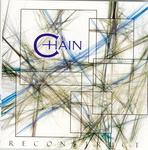

| Artist: | Chain |
| Title: | Reconstruct |
| Label: | Progrock Records |
| Length(s): | 80 minutes |
| Year(s) of release: | 2003 |
| Month of review: | [10/2003] |
| 1) | Earthscape 1 | 1.15 |
| 2) | Before There Was | 5.00 |
| 3) | First Life | 4.37 |
| 4) | Earthscape II | 1.25 |
| 5) | Impact | 5.38 |
| 6) | Earthscape III | 2.02 |
| 7) | Incommunicado Prisoners Of Silence | 6.36 |
| 8) | Missing Link | 4.52 |
| 9) | Earthscape IV | 1.56 |
| 10) | The Augmented Animal | 7.13 |
| 11) | Conspiracy | 6.18 |
| 12) | Earthscape V | 2.41 |
| 13) | The Planet Is Fine | 6.03 |
| 14) | Signs | 6.03 |
| 15) | Earthscape VI | 2.22 |
| 16) | What There Will Be | 4.34 |
| 17) | Earthscape VII | 4.48 |
| 42) | Ghost | 3.13 |
The Earthscape intermissions are more tranquil, fitting their nature, and generally break the onslaught of the other tracks in a pleasant way. Often they feature a spoken commentary on society, sometimes in the form of a treatise.
Impact is a bit of Malmsteen, flashy guitar (although not as far mixed to the fore as Malmsteen would want) and ditto synths. Although the vocals at times have some twist, the track remains pretty hardrocky.
Incommunicado starts another hardrocky track, but as it picks up speed it becomes a little more serious, gaining in complexity and sophistication, not in the least with a couple of less than expected melody bends and the addition of an electronic arabic theme. Missing Link is a bit of everything, the supply bass sounds a bit popjazzy, the vocals and acoustic guitar could almost fit to singer songwriter, but in each direction missing the depth or seriousness necessary. Towards the end the arabic synths return, to make things even more hodgepodgy.
Even though The Augmented Animal has some guitary sections, it also contains some of the kind of electronics used during the Earthscape intermissions. This track is more balanced, mixing rock and progressive elements, easily lifting it above the tracks before, although the vocals do have a sappy quality. Conspiracy also has a more progressive feel, although the guitars have returned to being heavy. The synths and the more sung than shouted vocals make the shift away from hardrock.
The Planet Is Fine is a somewhat hackneyed rocky track, with rather straight vocals, a bit of wiggling guitar and flattish drumming. Signs opens with pomped up synths and ditto guitars. I can already imagine Francis Rossi and Rick Parfitt rocking back and forth next to eachother, legs spread to the max. Not a pretty sight, IMHO.
What There Will Be is more complex, having a lengthy instrumental section ending in a duel between piano and bass.
The theme of the album concerns the phases mankind has gone through, but the roughness of most tracks keeps this theme in the background.
On the ghost track the band seems to be mocking themselves. I'm not sure that was necessary, or adds anything.